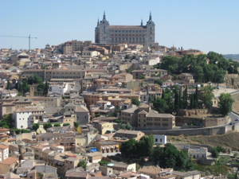
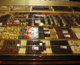
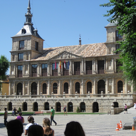
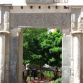

TOLEDO
Monday, July 5
We met our guide Marta at 9:30 to head to the train station to get to Toledo (just 30 minutes on the high speed train). Marta has been a guide for almost 20 years (she’s 38) and is qualified for both Madrid and Toledo. She later shared that Madrid was trying to pass a law that would make it easier to become a guide so she and a colleague were sorting through the laws of other regions so that they could fight the looser restrictions to maintain the professionalism of the certification. She was very easy to talk to and was quite animated about all the history she shared with us.
We took a cab all around the city to get the “lay of the land” (on top of a big hill, surrounded by walls and bridges over the river), then stopped for a quick break. We then went to see the cathedral, which had 5 centuries of art and architecture, and visited a shop where we watched a craftsman working on damascene, the Moorish art of inlaying gold, even copper or silver threads, against a matte black steel backdrop. They were kind enough to give us cold water bottles and the use of the WC, but we also loved the shop because of its intricately decorated items. (Karen bought earrings, and we chose hummingbird pendants for both grandmothers.) Then we got to see El Greco’s “masterpiece”, The Burial of the Count of Orgaz. Marta did a wonderful job of explaining exactly why it was considered a masterpiece, which was greatly appreciated by us under-educated engineers! We ate lunch at a traditional Toledan restaurant, where George had partridge stew! Then we got to do some more shopping – marzipan and swords are big sellers – but our favorite place sold pottery (Karen bought a beautiful plate) and housed most of its wares in the cool basement, including wonderful tiled pictures of the story of Don Quixote (the first time Claire had heard of him!) and a pet bunny that Claire fell in love with. Then we visited a Jewish temple that was constructed by Muslims and later converted to a Catholic church. Since we were all tired and hot, we stopped off at the train station cafeteria before boarding our train back to Madrid.
We rested a bit before heading out to Mercado San Miguel, a great marketplace of gourmet foods and tapas. We all got to choose something different (the wasabi caviar was the best!) and enjoyed the great selection.
Tuesday, July 6
Today we got to sleep in, with nowhere to be!
After breakfast, we went shopping along Gran Via, but ended up buying our souvenirs at the very large El Corte Ingles department store (colorful pottery plates, chocolate and flip flops!) and enjoyed all the fun things at O2, finally choosing to buy swimmer salad servers (I guess that’s the best way to describe them), a funky zebra keychain for Claire, and a cute green purse for Karen (on sale!). Alas, once again, George left with nothing for himself!
Then back to the hotel we went to pack (lots of extras to fit in!) before heading off to the airport. We travelled through the longest tunnel ever (10K) and arrived with plenty of time to spare (3+ hours) so grabbed some lunch and spent almost every last Euro we had!
In the end, all that extra time did us no good as we were given bad information. We were waiting to check into an American Airlines counter but finally realized that no one was showing up. So George asked another person at the information counter and they said to go to the Iberian section. We knew we might have a problem with Karen’s ticket so we waited FOREVER in the customer service line before we decided that George should get in the regular line just so that we wouldn’t have to wait all over again. When Karen finally got to speak to a rep they said they couldn’t do anything and to come back if the ticket agent had a problem. So then we all waited in the regular line and it was sooooo slow - it was killing us New Yorkers at how inefficient the whole process was! Finally someone took us out of the line when they realized we were on the NY flight. She was able to process everything fine (it still took a long time) and then told us to hurry to the gate. Well, that gate was the furthest possible distance from the counter (security, lots of escalators, a train, more escalators, another security checkpoint and then down the longest corridor fathomable). We were one of the last to board, but we made it!
After an uneventful flight home (all of us in the back of the bus this time!), we were happy to arrive back in Hopewell Junction with great memories of a very special time together!

A City Rich in Culture


A national landmark, Toledo is a place made special by its Arab, Jewish, Christian, and even Roman and Visigoth elements. In 1986 it was declared a UNESCO World Heritage Site.


